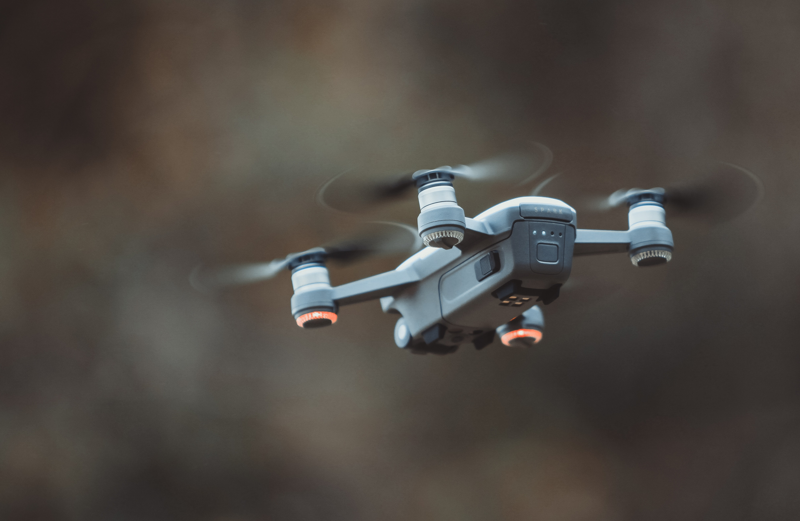
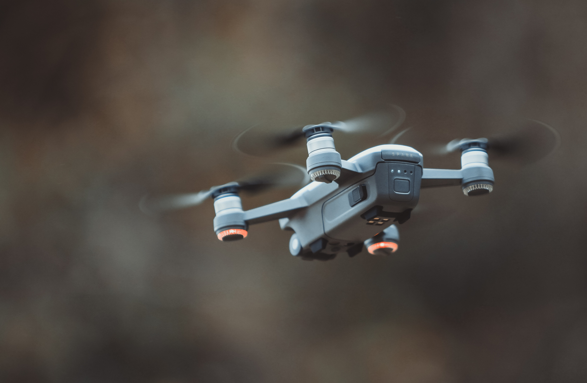

Los drones se utilizan para capturar imágenes del cultivo a lo largo de todo su desarrollo. Esta monitorización basada en imágenes aéreas tiene su base en el análisis de datos, a través de sistemas integrados de gestión, que permita realizar toma de decisiones de manejo desde la siembra hasta la cosecha.
Un "dron" es un vehículo aéreo no tripulado. Es decir, una máquina que vuela sin necesidad de que alguien la conduzca. Su trayectoria de vuelo es programada por software o se maneja a través de un control remoto. Al leer "vehículos aéreos" podrías pensar que hablamos de algo tan grande como un avión, pero no.
Explora nuestra amplia gama de drones de alta tecnología. Desde drones para principiantes hasta modelos profesionales para aplicaciones industriales.

 

En este video se mostrarar como funciona nuestros nuestros drones y sus funciones para la sociedad y para nuestra vida diaria
Ser un grupo multidisciplinario de alumnos comprometidos y competitivos que eleve el nivel académico y el prestigio de la Facultad de Ingeniería Campus Mexicali a nivel regional, nacional e internacional, desarrollando tecnología, así como organizando y participando en eventos tecnológicos.